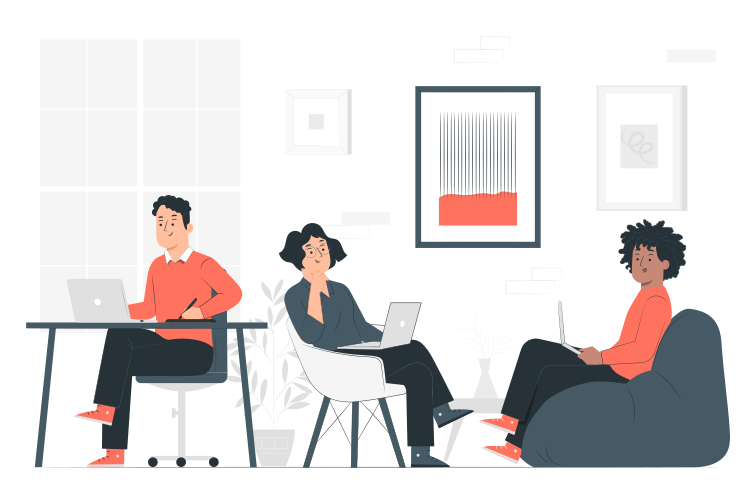
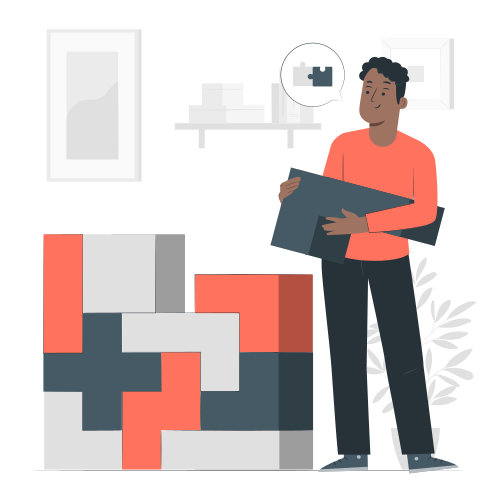
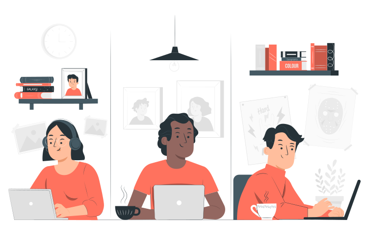
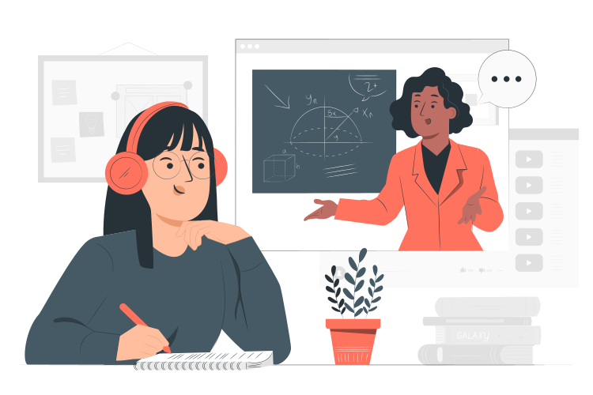
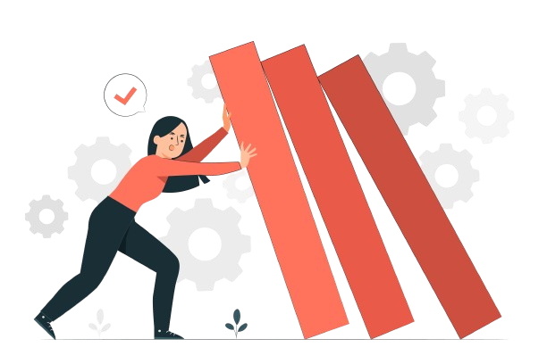
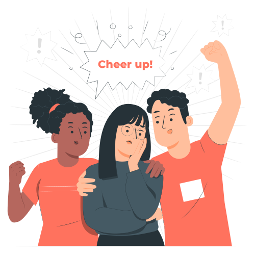
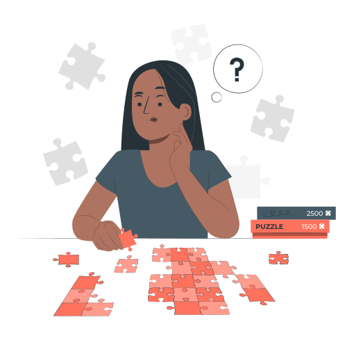

En el mundo laboral, las habilidades blandas son tan fundamentales como las habilidades técnicas. A lo largo de mi trayectoria profesional, he cultivado una serie de competencias que me han permitido desenvolverme con éxito en diversos entornos laborales. A continuación, destacaré algunas de estas habilidades y cómo las he aplicado en mi carrera.


Capacidad para adaptarme a nuevas situaciones y desafíos, permitiéndome ajustar mis enfoques según sea necesario para lograr resultados eficientes.
Habilidad para expresar ideas de manera clara y comprensible, facilitando una comunicación fluida y efectiva con colegas y clientes.

Capacidad para colaborar armoniosamente con otros, aprovechando las fortalezas individuales para alcanzar objetivos compartidos.

Actitud proactiva hacia el aprendizaje continuo, buscando constantemente oportunidades para desarrollar nuevas habilidades y conocimientos.

Fortaleza para enfrentar contratiempos y desafíos con determinación, adaptándome y aprendiendo de las experiencias difíciles para seguir avanzando.
Iniciativa para tomar medidas anticipadas y buscar activamente oportunidades de mejora, contribuyendo al éxito de los proyectos y equipos.

Capacidad para comprender y relacionarme con las emociones y perspectivas de los demás, promoviendo relaciones colaborativas y armoniosas.

Habilidad para identificar y abordar eficazmente los desafíos, buscando soluciones creativas y pragmáticas para superar obstáculos.